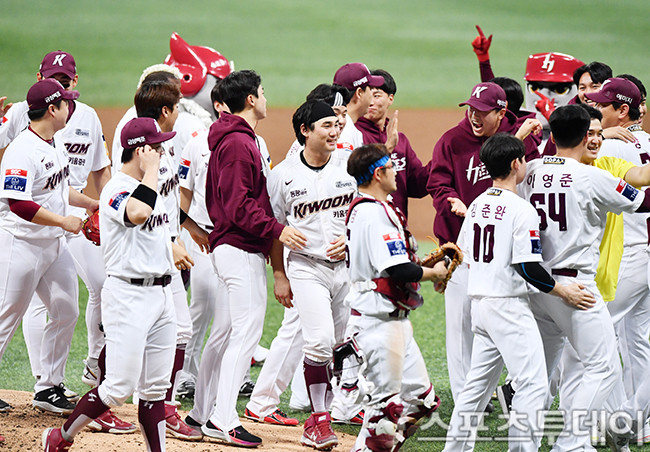

키움히어로즈는 (주)서울히어로즈 에서 운영하는 KBO 리그의 프로야구단. 연고지는 서울특별시로 두산 베어스, LG 트윈스와 연고지를 공유하고 있다. 홈구장은 구로구 고척동에 위치한 고척 스카이돔이다
한국프로야구에서 유일무이한 형태로 운영되는 구단이다. 다른 구단은 대형 기업의 자기업이자 계열사에 가까워 모기업의 이름을 팀명으로 사용하지만, 이 팀은 구단 자체가 하나의 단일사업체이며 '히어로즈'라는 팀명만 유지한 채 그 앞에 후원사의 이름을 팀명으로 달아주는 독특한 사업 모델을 가지고 있다.
